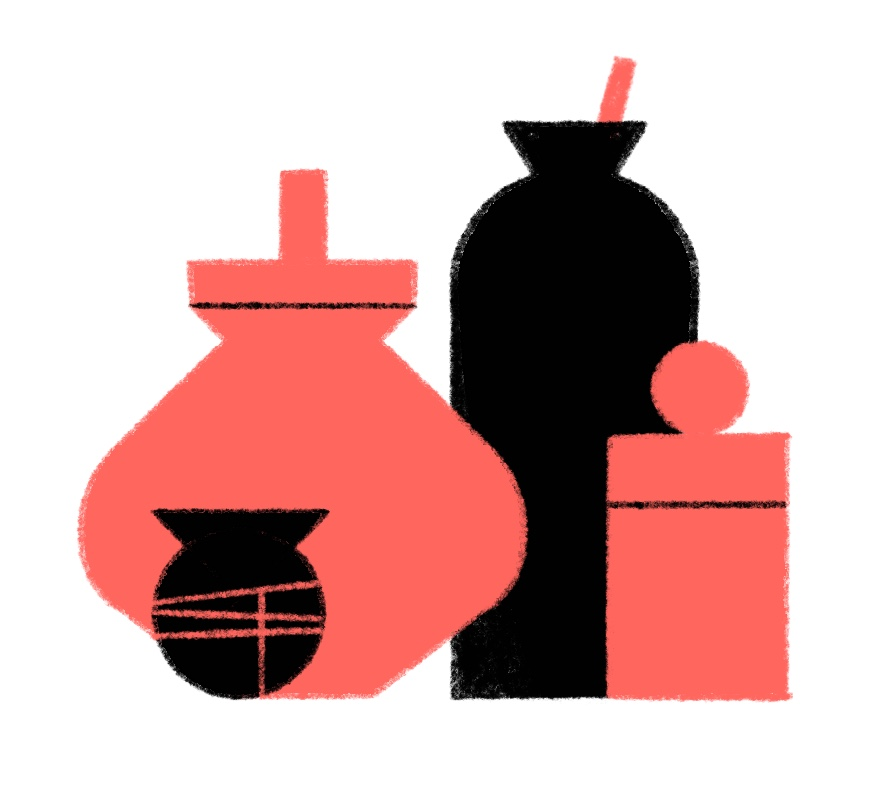

Free Stone City
An outpost has grown around the humming stones.
Numbered Works, No. 1.
November 2021.
A small, system-agnostic setting to drop into your RPG. Includes maps, random tables, encounters, and BEES.
MAP
1. HUT
A small A-frame structure, large enough to accommodate two humans.
- Bedding for two, wood stove.
- Packed dirt floor.
- Smells of earth and ash.
- A stone shard on a chain.
2. HALL
A large single-roomed building with a gable roof.
- Benches, long tables.
- Kitchen, small stage.
- Mortar and pestle, sieve.
- Dried fruits and meats in sacks.
- Clay idol. If smashed, precious gems spill out.
3. ZOME
A dome-like structure made up of irregular triangular panels. It has a patchwork appearance. Large enough to accommodate one dozen humans.
- Windows of coloured glass.
- 12 bed rolls, rugs, pillows.
- Smells of cloves, sweat, candles.
- Orb. May be pondered. Cannot be shattered. Unknown material.
4. STATION
A low, flat-roofed hut with two poles projecting from the roof. A rug is outside the door.
- Lightning rod.
- Steel signal mirror on roof, operated via pulleys inside.
- Dish filled with black sand. Shapes drawn in the sand with a finger appear in another dish in a distant location.
5. KEEPER’S HOME
The home is raised on stilts and has an L-shaped platform projecting from the front. There is a side door with a ramp.
- Sparsely furnished.
- Smells of smoke and honey.
- Clay pots of honey, mead, wax.
- Spare beekeeper suit.
6. WORKSHOP
The workshop has a sheltered doorway, a roof-mounted windmill, and a lean-to on one side for storage.
- Tools: mallet, machete, drill.
- Bee smoker fuel: dried leaves, pine needles.
7. BEE SHED
A ramshackle structure with holes in the walls, allowing bees access to the hives inside.
- Five bee hives housing 1-5k bees, depending on season.
- Hives contain honey, wax.
- Scattered charms.
8. FRUIT TREES
- Leaves are heavy, fibrous.
- Fruit is large, tropical, multi-coloured. Smells of sherbet, tastes of lemon and rose.
- Seeds are fast growing, waxy, mildly toxic if eaten, deadly when concentrated.
9. THE STONES
- Warm, humming, they steam when it rains.
- Glow softly at night, colours change with the moon phase.
- Audio frequencies shift as you walk between the stones.
- See STONE EFFECTS table.
1d6 ENCOUNTERS
- THE KEEPER wears a hood and mask. Kindly, curious. Wants to protect the bees.
- BEES will attack if the hive is threatened but otherwise harmless. Fluffy, fist-sized.
- SLOW BEASTS emerge from the outskirts to silently feed on fruit, sleep among Stones.
- RESEARCHERS study The Stones using arcane tools.
- DEVOTEES in red robes worship and chant in tune with The Stones. Moon-eyed.
- BANDITS gather at The Stones to heal fresh wounds. Wary, hungry, pursued.
2d6 HAPPENINGS
- A golden haze.
- Thunderstorm.
- Unfamiliar birdsong.
- A message in the sand.
- Bats fly overhead.
- Sudden sun shower.
- Aurora.
- Distant droning.
- Sweet smelling smoke.
- Bells.
- Ominous horns.
2d6 STONE EFFECTS
May be triggered by tampering, chanting, striking, rites, etc.
- The Stones disappear with a groan and blinding light, leaving great holes behind. May or may not return.
- The volume of the hum increases and all creatures in the vicinity fall asleep.
- The Stones become hot. A touch will badly burn.
- All metal objects are drawn toward The Stones.
- Gravity is weakened among The Stones.
- Minor earthquake. A hive is damaged.
- The Stones vibrate. The bees leave their hives. The Keeper is distraught.
- The Stones acquire a perfect mirror finish.
- The hum increases in pitch. All Devotees and chanters disappear.
- The Stones shrink until the largest is the size of an egg. Huge cavities left behind. May or may not return to original size.
- The Stones glow red hot. Buildings burn. The Stones sink into the earth, leaving smouldering pits.